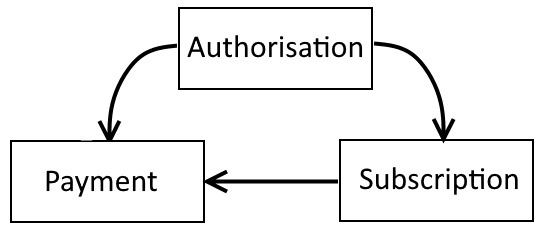

Salesforce package
The core package consists of three custom objects and a set of web services that communicate between Asperato and Salesforce. The web services are all managed through Apex classes. The package is designed to be extensible so that the package web service classes can be replaced by custom Apex code if that is required.
There are simple VisualForce pages to support each of the data objects and tabs accessing these are grouped together into an Asperato application.
The configuration of the package is managed via Custom Metadata. There are two Metadata Types, Asperato Settings and Service Handler. The options available for these settings are described below.
The data objects
The package data objects are called Payment, Subscription and Authorisation and they are related to each other as per the diagram below.

Authorisation
Authorisation contains data relating to an authority to collect payments. This can take the form of either a Direct Debit mandate or a card continuous payment authority.
The fields are their usage are described below:
| Field | Usage |
|---|---|
| Account Name | Records the name on the bank account or the cardholder name for future reference. |
| Account Reference | A partially obscured record of the bank account or credit card number for future reference. |
| Authorisation Type | One of: Card Credit or debit card BACS UK Direct Debit eCheck US Bank payment SEPA European Direct Debit Wallet PayPal, etc. |
| Card Type | The type of credit or debit card, or ‘Not Applicable’ for the other Authorisation Types |
| CPA Granted | Indicates that the customer has given permission for card details to be used to collect automatic payments. |
| Expiry Date | The date on the which the authorisation will expire (if applicable) |
| Mandate Reference | The reference for a Direct Debit mandate that will need to be displayed to the end customer in emails and other communication. |
| Repeat Cross Reference | One of a pair of fields needed to make a repeat payment request. |
| Repeat Order ID | One of a pair of fields needed to make a repeat payment request. |
| Status | The status of the authorisation. Can be one of: Pending Has been created but is not yet active In Force In force and ready to use Cancelled Has been stopped Failed Has failed for some reason |
| Status Description | A descriptive text showing the reason related to the current status. Might contain the reason for cancellation or failure for example. |
Subscription
Subscription contains the information needed to drive the creation of payments where they need to recur automatically.
Subscription has a master/detail relationship with Authorisation.
The fields are their usage are described below:
| Field | Usage |
|---|---|
| Authorisation | A link to the related Authorisation object. A subscription must have and entry here in order to process a payment. |
| Authorisation Status | A formula reflecting the status of the associated Authorisation. |
| Authorisation Type | A formula reflecting the type of the associated Authorisation. |
| Day of the Month | The day of the month on which the subscription payment should be taken. |
| Frequency | The payment frequency for the subscription. |
| Last Payment Date | The date on which the subscription payment request was last raised. |
| Next Payment Date | The date on which the next payment request will be raised. |
| Regular Amount | The amount of the subscription charge. The currency will be determined based on the currency of the Subscription record in a multi-currency org or from the org default currency for a single currency org. |
| Start Date | Date of which the subscription come into force. |
| Status | The status of the subscription. Can be one of: In Force In force and ready to use Cancelled Has been stopped |
| Status Description | A descriptive text showing the reason related to the current status. Might contain the reason for cancellation for example. |
Payment
Payment contains both the request for a payment to occur and also the response once it has been processed.
Payment has a lookup relationship to both Authorisation and Subscription.
The fields are their usage are described below:
| Field | Usage |
|---|---|
| Account Name | Records the name on the bank account or the cardholder name for future reference. |
| Account Reference | A partially obscured record of the bank account or credit card number for future reference. |
| Amount | The amount of the payment. Will contain either the requested amount of the amount actually collected depending on the status of the payment. |
| Authorisation | A link to the related Authorisation object if appropriate. |
| Card Type | The type of credit or debit card, or ‘Not Applicable’ for the other Payment Types |
| Cross Reference | A reference to the payment generated by the payment gateway. |
| Frequency | A formula reflecting the payment frequency from the associated subscription if appropriate. |
| Order ID | A unique reference to the payment transaction generated by Asperato and reflected through to the payment gateway. |
| Original Payment | A way of cross relating payments, for example where one transaction is a refund of another. |
| Payment Date | The date on which the payment was made. |
| Payment Type | One of: Card Credit or debit card BACS UK Direct Debit eCheck US Bank payment SEPA European Direct Debit Wallet PayPal, etc. |
| Scheduled Date | Date on which a payment is scheduled to be processed. Can be used to set up payments that are due in the future. |
| Sent Date | Date on which an automatic payment was sent to Asperato for processing. |
| Source | Payment source. Can be one of: Web Holder not present Repeat |
| Status | The status of the payment. Can be one of: Pending Has been created but is not yet active Sent Has been set to Asperato for processing. Paid Has been paid. Refunded Has been refunded. Failed Has failed for some reason Payment Scheduled Is ready for collection by the next batch run. |
| Status Description | A descriptive text showing the reason related to the current status. Might contain the reason for cancellation or failure for example. |
| Subscription | A link to the related Subscription record if appropriate. |
| Type | One of: Payment Refund |
The Custom Metadata Type settings
There are two Custom Metadata Types that affect the way that the Asperato Phoenix package operates.
Asperato Settings
There is a single record in this Metadata Type with the Label of Default. When managing this record there are three fields available.
The first of these field is labeled pmRef. The value for this field is provided by Asperato and relates the Salesforce organisation to the equivalent configurations within the Asperato databases. You must set this value before using the package to take payments etc.
The second field is labeled Operating Mode. This is a select box with two options, Test and Live. Switching this value will automatically switch Asperato server endpoints between the sandbox test environment and the live server environment. Leave this setting as ‘Test’ until such time as the live configuration has been established with Asperato.
The third field is labelled Direct Debit Lead Time. This is a numeric field with a default value of 4 and this represents the number of days before a payment is due that the process of collecting that payment will start. This is to compensation for the inherent delays in the UK BACS payment system. This value can be tuned if needed. Under normal circumstances you should leave this value at the default.
Service Handlers
There are five records in the Service Handlers Metadata Type and these are used to implement overrides to standard package service handlers. A service handler is an Apex class that processes the data provided in a web service call and builds the appropriate response. The full details for each of the web services available and how to create the Apex needed is described in the Web Services section.
The only field you can edit for each record is the Handler Name. This is the name of the Apex class that will be executed for the relevant handler. The complete list of the Service Handlers and their default values is shown in the table below. The Interface Name is the name of the interface that the service handler implements.
| Label | Default Handler | Interface Name |
|---|---|---|
| GetAuthorisations | GetAuthorisationsService | IGetAuthorisationsService |
| GetPayments | GetPaymentsService | IGetPaymentsService |
| PutAuthorisations | PutAuthorisationsService | IPutAuthorisationsService |
| PutMessages | PutMessagesService | IPutMessagesService |
| PutPayments | PutPaymentsService | IPutPaymentsService |
Web Services
Each web service consists of an Apex REST endpoint and an associated Apex class that processes the REST request object and builds the relevant response object. The Apex class that processes the REST data exchange is called a service handler and the actual name of the service handler is driven by Custom Metadata.
So in simple terms to create a new Apex service handler you create a new Apex class that implements the relevant interface and update the Custom Metadata to point to the new class. Next time that the web service fires, the service handler that executes would be your code rather than that supplied by the Asperato Phoenix package.
There are three sets of web services relating to payments, authorisations and message updates.
Payments
The two web services that relate to payments are labelled GetPayments and PutPayments.
GetPayments
This gets data from the Payment object and passes this to Asperato so that it can be used to prepopulate the payment page web screen. The web service has a simple request of a single Salesforce ID and returns a single set of response data. The field names and usage are shown in the table below.
Request
| Field Name | Type | Usage |
|---|---|---|
| RecordID | String (ID) | Contains the Salesforce ID to a row in the payment object. |
| UrlParameters | List of UrlParameter | Any additional parameters included into the URL that invokes the Asperato pay page are passed to Salesforce in this list. |
Response
| Field Name | Type | Usage |
|---|---|---|
| Success | Boolean | When true means the record was located correctly. |
| UseHostedPage | Boolean | When true means that where a gateway offers a hosted page option that will be invoked in preference to the Asperato template. |
| DueDate | Date | The date on which the payment is due. |
| Amount | Long | Amount due in the lowest denomination for the the currency. For GBP this would be pence, for USD this would be cents, for EUR this would be cents, etc. |
| CurrencyCode | String | Three character ISO 4217 currency code. |
| ErrorMessage | String | If the Success field is false this will contain an indication of why the call failed. |
| PaymentFrequency | String | One of: Single Daily Weekly Monthly Quarterly Semi-annual Annual |
| PaymentType | String | One of: Card BACS eCheck SEPA Wallet |
| UrlCancel | String | URL that the payment page will link to if the end customer chooses to cancel the payment process. |
| UrlError | String | URL that the result page will go to in the event that the transaction fails |
| UrlExit | String | URL that the result page will go to after a successful transaction |
| PassThroughParameters | List of PassThroughParameter | This is a list of name value pairs that can be passed from Salesforce, updated in the paypage and then passed back to Salesforce. |
These are the list parameters mentioned above
UrlParameter
| Field Name | Type | Usage |
|---|---|---|
| Key | String | The name of the parameter as it appeared in the URL. |
| Value | String | The content of the parameter as it appeared in the URL. |
PassThroughParameter
| Field Name | Type | Usage |
|---|---|---|
| Key | String | The desired name of the parameter to be passed to Asperato. Note that there are certain names that have significance to the web templates and these are documented in the templates chapter. |
| Value | String | The desired content of the parameter to be passed to Asperato. |
| IsDisplayOnly | Boolean | When true the parameter will appear in the template and not be passed back to Salesforce. By default all parameters are passed into Asperato and back out again. |
When implementing a service handler override class this new class should implement the interface called asp03__IGetPaymentsService.
PutPayments
This puts data back into Salesforce after a payment attempt has been made irrespective of whether that attempt succeeded or failed. This web service can be bulked up so is capable of sending multiple rows in a single request.
Request
| Field Name | Type | Usage |
|---|---|---|
| PutPaymentRequestDetails | List of PutPaymentRequestDetail | A list of outcomes from payment attempts. |
PutPaymentRequestDetail
| Field Name | Type | Usage |
|---|---|---|
| PaymentDate | Date | The date the payment was attempted. |
| Amount | Long | Amount transacted in the lowest denomination for the the currency. For GBP this would be pence, for USD this would be cents, for EUR this would be cents, etc. |
| AccountReference | String | An obscured reference to the card or the bank account. |
| AccountName | String | The name on the card or the bank account |
| CardType | String | If a card this will say what type of card was used otherwise will say ‘Not Applicable’. |
| CrossReference | String | The cross reference value obtained from the payment gateway. |
| CurrencyCode | String | Three character ISO 4217 currency code. |
| OrderId | String | An Asperato generated order reference for the transaction. |
| PaymentType | String | One of: Card BACS eCheck SEPA Wallet |
| SalesforceId | String | ID of the payment object row |
| Source | String | How the transaction was generated. One of: Holder not present Repeat Web |
| Status | String | One of: Failed Sent |
| StatusDescription | String | Text relating to the Status. This will show either some form of transaction reference or the reason why the payment failed as appropriate. |
| PassThroughParameters | List of PassThroughParameter | This is a list of name value pairs that were passed from Salesforce, updated in the paypage and then passed back to Salesforce. |
PassThroughParameter
| Field Name | Type | Usage |
|---|---|---|
| Key | String | The name of the parameter passed from Asperato. |
| Value | String | The content of the parameter passed from Asperato. |
Response
| Field Name | Type | Usage |
|---|---|---|
| Success | Boolean | When true indicates that the overall request was successful. |
| ErrorMessage | String | If the Success field is false this indicates the reason why. |
| PutPaymentResponseDetails | List of PutPaymentResponseDetail |
PutPaymentResponseDetail
| Field Name | Type | Usage |
|---|---|---|
| Success | Boolean | When true indicates that the request was successful for this row. |
| ErrorMessage | String | If the Success field is false this indicates the reason why. |
| SalesforceId | String | The ID of the row that was updated. |
Messages
The message web service is used to send messages from Asperato to Salesforce. These messages affect the status of existing payments or authorisations.
At the moment these messages all relate to UK Direct Debits, though in future this will include SEPA direct debits and card updates.
This web service can be bulked up so is capable of sending multiple rows in a single request.
Request
| Field Name | Type | Usage |
|---|---|---|
| PutMessagesRequest | List of PutMessageRequestDetail | A list of messages. |
PutMessageRequestDetail
| Field Name | Type | Usage |
|---|---|---|
| Success | Boolean | When true means the message has a positive implication, when false indicates a failure of some sort. |
| EventReference | String | A unique reference to the message. |
| MessageText | String | Textural content of the message truncated to 250 characters so as not cause insert failures in the standard objects. |
| ReasonCode | String | The raw reason code from either BACS or SEPA |
| Resource | String | Can be one of mandates payments refunds Payouts (not currently sent) subscriptions (not currently sent) |
| Status | String | The action that the message implies. Typical values are created active cancelled failed etc. |
| TransactionReference | String | A reference needed to locate the item to which the message refers (see below) |
Locating the data to which a message refers.
When the resource has the text content ‘mandates’ the message relates to an Authorisation. To locate the correct row search for where the Repeat Cross Reference on the Authorisation row equals the TransactionReference on the request.
When the resource has the text content of either ‘payments’ or ‘refunds’ then the message relates to the Payment object.
To locate the correct row search for where the Cross Reference on the Payment row equals the TransactionReference on the request.
Response
| Field Name | Type | Usage |
|---|---|---|
| Success | Boolean | When true indicates that the overall request was successful. |
| ErrorMessage | String | If the Success field is false this indicates the reason why. |